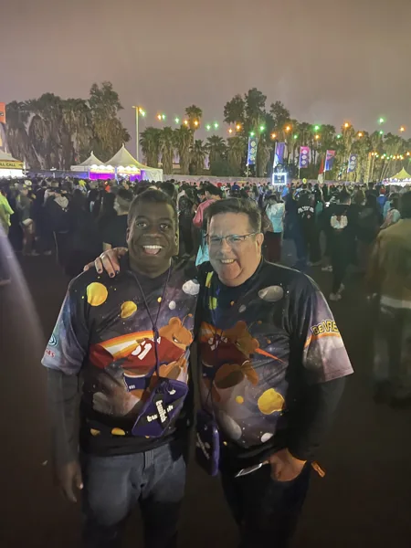
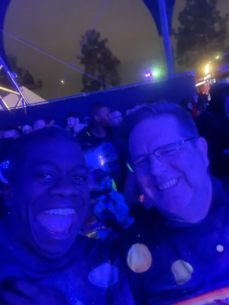
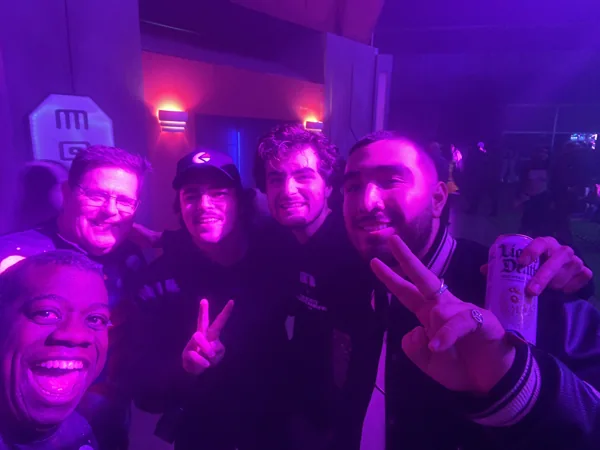
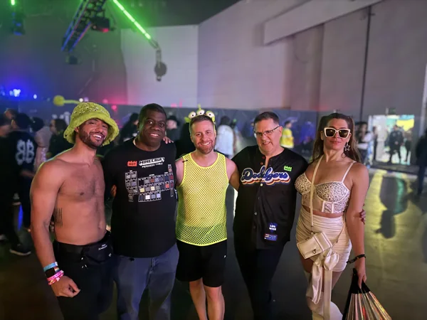

MUSIC · DEC 31 TO JAN 01 · San Bernardino
COUNTDOWN
A new year. Our lovely old tradition.
99days out
- When
- Dec 31 to Jan 1, 2027
- Where
- NOS Event Center, San Bernardino · Directions
- Light
- After dark
Notes to the crew
Before this night
5 real photographs from Gordon's album that lead here.

Our lovely old tradition.Countdown · 2022 · December 30, 2022{kind=link}

The year ends. We keep dancing.Countdown · 2022 · December 30, 2022{kind=link}

More people to ring it in with.Countdown · 2022 · December 30, 2022 A familiar sound. Another turn of the year.John Summit · Countdown · December 31, 2025
A familiar sound. Another turn of the year.John Summit · Countdown · December 31, 2025{kind=link}

A new year, already full of us.Countdown · Hello, 2026 · January 1, 2026Dig into the sound and story
2 short chapters. Open the ones that call to you.
THE WORLDA new year on another planet.
Insomniac’s 2026 announcement returns Countdown to NOS Event Center across December 31 and January 1. Its alien-themed world includes five covered stages, carnival rides and the Galaxy Mall. The playful setting gives an ordinary calendar boundary its own strange little universe.
A MUSICAL DOORWAYThe joy in U & I.
Galantis is a doorway into Joe’s kind of joy. “Runaway (U & I)” is here as an official catalog video to explore, not a claim that we heard this exact track at a particular Countdown or will hear it in the next set.
Before we go
Artist recordings open on their own players. Not a promised setlist.
Same crew, other nights
Swipe the picture, or use the arrow keys, for the next night.